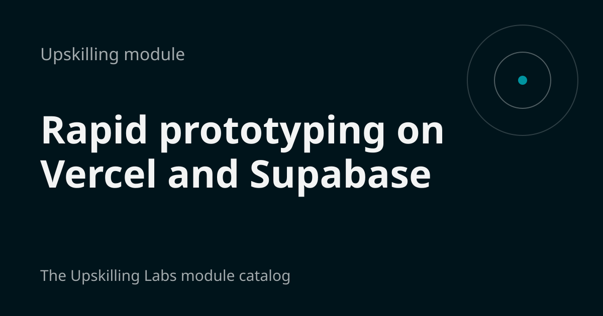

Not yet reviewed. Nobody has checked this learning material yet, so treat it as a draft.
About this module
The module's metadata, from the front matter of modules/rapid-prototyping.md.
- Learning outcome
- Turn a frame into a rough prototype, deploy it to a preview link, and write down what three people did with it.
- Kind
- Upskilling module, for learners
- Output
- Workshop, has an output. A prototype at a preview link and notes on what three people did with it.
- Stage
- During a Cycle
- Scale
- 1:cohort/public
- Delivered by
- A builder in residence
- Maintained by
- a builder in residence, an organizer
- Reviewed by
- Not yet
- Timing
- Before an attempt
- Learner stage
- involved, self-directed
- How support fades
- A worked example is shown once at the start. After that, help only when someone asks.
- Maps to
- Prototyping and usability testing (design thinking)
- Time
- 2 hours, plus three short tests
- Prerequisites
- Git, Vercel, Supabase
- Scope
- General
- Tags
- prototyping, vercel, supabase, research
- Status
- draft
- Optional
- Yes, like every module in the catalog
- A private way in
- Build it on your own branch with made-up data. Nobody sees it until you share the link.
- A way out
- A prototype that confused all three people is a finding, not a failure. Write down what they did and stop there.
Made-up example for the prototype. Not formed from logged situations, so it shows a module written from a past workshop instead. Not reviewed.
Overview
A rapid prototype is a probe, not a product. It exists to see what real people do with an idea, and it's thrown away without regret. This module assumes you can already use Git, deploy to Vercel and read from Supabase.
Exercises
- Alone: write the one question your prototype tests.
- Alone: build the smallest thing that asks that question, with made-up data, and deploy it to a preview link.
- With others: watch three people use it. Write down what they did, not what they said they'd do.
For facilitators
Try first, explain after. Let people build before showing the worked example a second time. When someone is stuck, ask what question their prototype is testing. Most stuck prototypes are trying to answer three.
Resources
- The pod README's "Start a rapid prototype" link
- Vercel and Supabase starter guides
Formed from
No logged situations yet. This module was written from a past workshop.